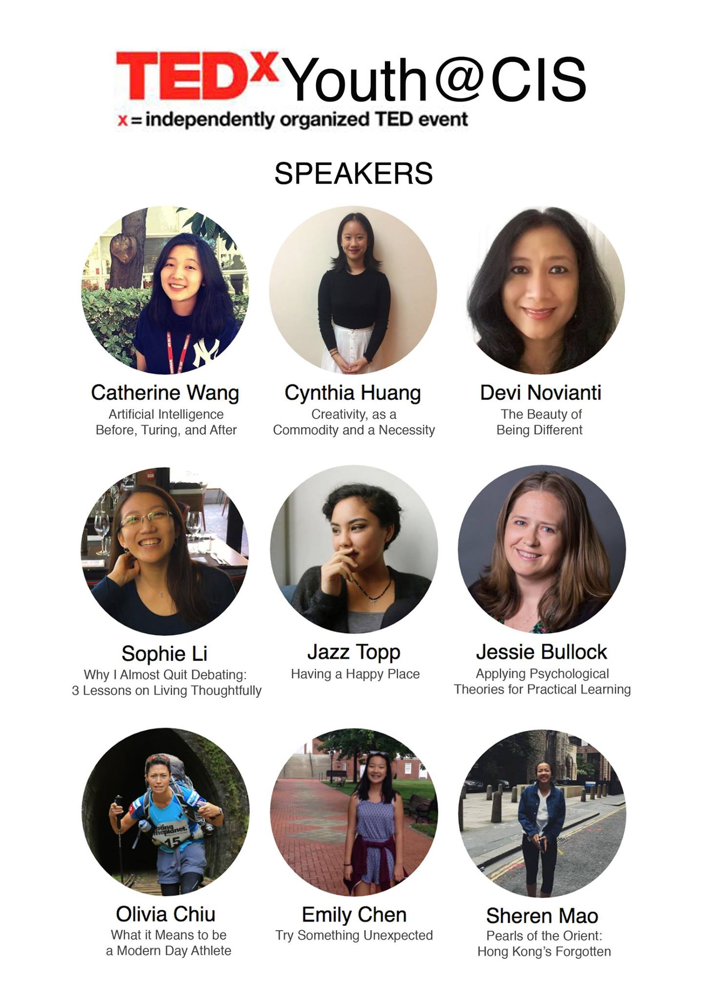

View on your phone or decrease the width of your window to view the brochure!
In spirit of ideas worth spreading, TED has created TEDx. TEDx is a programme of local, self-organized events that bring people together to share a TED-like experience.
Chinese International School’s event is called TEDxYouth@CIS, where x = independently organized TED event.
At TEDxYouth@CIS, live speakers, TEDTalks videos, and live performances will combine to spark deep discussion and connection within the community. This annual student-orchestrated event aims to create a friendly platform where all members of the entire CIS community can share experiences, shed light on ideas, and deliver personal messages. Ultimately, we envisage that it will give our community the opportunity to stimulate dialogue through TED-like experiences in an intimate setting.
Special thanks to CISPTA and the Annual Fund for their generous support.
Visit www.facebook.com/TEDxYouthCIS
TED is a nonprofit organization devoted to Ideas Worth Spreading. Started as a four-day conference in California 30 years ago, TED has grown to support its mission with multiple initiatives. The two annual TED Conferences invite the world's leading thinkers and doers to speak for 18 minutes or less. Many of these talks are then made available, free, at TED.com. TED speakers have included Bill Gates, Jane Goodall, Elizabeth Gilbert, Sir Richard Branson, Nandan Nilekani, Philippe Starck, Ngozi Okonjo-Iweala, Sal Khan and Daniel Kahneman.
The annual TED Conference takes place each spring in Vancouver, British Columbia. TED's media initiatives include TED.com, where new TED Talks are posted daily; the Open Translation Project, which provides subtitles and interactive transcripts as well as translations from volunteers worldwide; the educational initiative TED-Ed. TED has established the annual TED Prize, where exceptional individuals with a wish to change the world get help translating their wishes into action; TEDx, which supports individuals or groups in hosting local, self- organized TED-style events around the world, and the TED Fellows program, helping world-changing innovators from around the globe to amplify the impact of their remarkable projects and activities.
Visit www.ted.com
Ingrid Tsang
Sheren Mao
Sherman Liu
Alex Okita
Angelina Wang
Charlotte Lang
Cindy Kim
Isaac Um
Kevin Ky
Natasha Lee
Shannan Liu
Ask any boys (or some girls nowadays) what they would like to be when they are older, and one or two might say they dream of becoming a professional footballer, being paid to be adored by many week in and week out! So many dream, so many fail. I lived the 'dream' for a short while and found that expectations really are fields away from reality. I will be discussing my journey from a professional footballer to chief hobbler and current Director of Sports & Activities here at CIS and all in between and how you have to adapt at moments notice to what life throws your way.
Music is an integral part of our lives, and whether consciously or not, you've come across classical music. Yet I don't think many people nowadays find it a particularly exciting prospect. In fact, most probably think it's deadly boring. As a 17 year old teenager and student who loves classical music, I suppose I'm a bit of an anomaly. I spend almost too much time on classical music, reading about and listening to it every day, or idiotically bouncing around air-conducting and whistling my favourite pieces. At this year's TEDx, I'd like to share my passion, and give my two cents on why classical music is worth it.
I'm Curtis Lo, a year 12 student with a passion for metaphysics and way too much time. I'm going to be talking about existence, what that means, and the social, personal, and metaphysical implications of existence.
I am a SCMP Columnist, founder of The Kelly Yang Project, a leading after school writing and debating program in Causeway Bay, Kowloon and Sheung Wan, and author of FRONT DESK, forthcoming novel coming out May 2018 from Arthur Levine/Scholastic, the publishers of Harry Potter. In my TEDx speech, I will be talking on the topic of AN INSIDE LOOK INTO HONG KONG EDUCATION. I have been working in education in Hong Kong for over 12 years and have taught thousands of students from international schools and local schools. I will discuss what is working well and poorly in education in Hong Kong, why, and what to do to improve the system.
Hi, I'm Kerry! I'm currently a Year 13 student at CIS. In my free time, I love to read, play netball, do gymnastics, and bake (not well). In my TEDx speech, I'll be talking about my experiences with self-reflection and how it helped me overcome obstacles that were very meaningful to me, changing the way I approach my goals.
Hi, I'm Natalie and I'm going to talk about what happens after opposites attract. With parents of different religious, political and parenting views, a product of the phenomenon tells all!
Hi, I'm Neil, I'm 16 and I joined CIS in Year 10. I'm a combat sports enthusiast who enjoys trying different kinds of martial arts, such as boxing, Muay Thai and Judo.